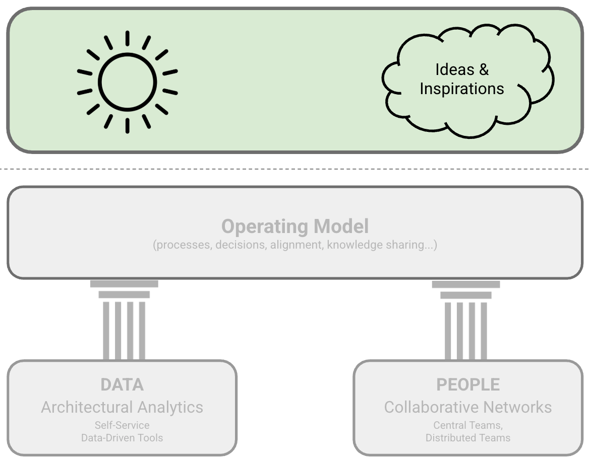

On Being Architect: Introduction

IN THIS SECTION, YOU WILL: Get an overview of lessons I learned on what it means to be an architect in practice.
With this section, we start the second part of our book, which unveils a wealth of practical ideas and inspiration to help you bring the Grounded Architecture framework we outlined in the first part to life. This part of the book will equip you with valuable tips and insights for running an IT architecture practice (Figure 1). In complex organizations, you cannot just copy and paste other companies’ approaches. Instead of having a rigid structured framework, having a toolbox of inspirational resources is more practical for implementing a successful architectural practice.
 Figure 1: Grounded Architecture Overview: Ideas and Inspirations.
We begin this second part with several resources about what it means to be an architect. The role of an architect in the IT industry is like a Swiss Army knife—multifaceted and indispensable. It requires blending technical expertise, strategic thinking, and interpersonal skills to drive successful outcomes in complex organizational environments. In this part of the book, I offer a deep dive into various perspectives on my view on what it means to be an architect in practice, providing a holistic understanding of the responsibilities and expectations associated with this role.
By examining these perspectives, I hope you will uncover some of the architects’ essential qualities and responsibilities. My exploration highlights the importance of a well-rounded skill set and a strategic approach, showing that being an architect is more than just wearing stylish glasses and nodding thoughtfully in meetings. Whether you’re an aspiring architect or a seasoned pro, I hope these insights can provide valuable guidance on navigating and excelling in this dynamic and evolving field.
Growing As An Architect
Borrowing from Gregor Hohpe’s view on architect development from his book Software Architecture Elevator, I share the view that our architects should stand on three legs:
- Skills
- Impact
- Leadership
Architects must have a minimal “length” of all of these “legs” to be successful (Figure 2). For instance, having skills and impact without leadership frequently leads to hitting a glass ceiling. Such architects plateau at an intermediate level and cannot direct the company to innovative or transformative solutions. Leadership without impact lacks foundation and may signal that you have become an ivory tower architect with a weak relation to reality. And having impact and leadership qualities but no skills leads to impractical decisions not informed by in-depth knowledge.
 Figure 2: Architects must have a minimal “length” of all “legs” to be successful.
Figure 2: Architects must have a minimal “length” of all “legs” to be successful.
Skills
Architects must have a solid skill set, possessing both knowledge and the ability to apply relevant knowledge in practice. These skills should include technical (e.g., cloud architecture or Kubernetes technology) as well as communication and influence skills.
A typical skillset of an architect includes:
- Hard (technical) skills: including extensive knowledge of both new technology and legacy technology stacks,
- Soft skills: like the ability to calm a panicking developer or decode the cryptic language of a business executive,
- Product development knowledge: knowing what makes a product tick,
- Business domain knowledge: understanding those endless spreadsheets,
- Decision-making skills: choosing the right path, even when all options look doomed.
The section Skills provides more details.
Impact
Impact should be measured as a benefit for the business. Architects need to ensure that what they are doing profits the business. Architects that do not make an impact do not have a place in a for-profit business.
Examples of such impact may include:
- Aligning business, product, technology, and organizational strategies,
- Process optimizations and improvements with real, measurable impact on the work of an organization,
- Cost optimizations of systems based on data-informed decisions,
- Developing pragmatic technology strategies, helping businesses reach goals sustainably,
- Driving delivery of products, supporting teams to increase quality and speed of delivery,
- Supporting business innovation, bringing new pragmatic ideas aligned with business strategy and goals.
The section Impact provides more details.
Leadership
Leadership acknowledges that experienced architects should do more than make architecture:
- They are a role model for others in the company on both the technical and cultural front.
- Their technical influence may extend beyond your organization and reach the industry at large.
- They lead efforts that solve important problems.
- They may contribute to the broader technical community through tech talks, education, publications, open-source projects, etc.
- They raise the bar of the engineering culture across the organization.
I also support Gregor Hohpe’s view that mentoring other architects is one of the most crucial aspects of senior architects’ leadership. Feedback cycles in (software) architecture are inherently slow. Mentoring can save new architects many years of learning by doing and making mistakes.
The section Leadership provides more details.
Thinking Like an Architect
In IT organizations, architects are the essential connectors, often referred to as “superglue.” Their primary function is integrating different aspects of the organization—architecture, technical details, business requirements, and team dynamics—ensuring that everything works together seamlessly. This role is vital in large organizations and complex projects where cohesion and coordination are paramount to success. The section Thinking Like an Architect: Architects as Superglue provides more details.
Balancing curiosity, doubt, vision, and skepticism is essential for driving sustainable innovation and change in organizations. Architects must constantly reflect on how well they balance these forces. In doing so, they can ensure that their efforts are driven by a healthy combination of exploration, critical validation, strategic guidance, and cautious realism—all crucial to achieving lasting success in any organizational change. The section Thinking Like an Architect: Balancing Curiosity, Doubt, Vision, and Skepticism provides more details.
The ideal career path for architects is rooted in a strong engineering background. This foundation provides the technical proficiency necessary for advanced architectural roles. Moving from an engineering role to an architecture role involves broadening scope, increasing diversity, and developing strong communication and influencer skills. Architecture roles can lead to tech leadership positions such as Engineering Director or Chief Technology Officer (CTO), leveraging strategic vision, decision-making, and leadership skills.
The section Architects’ Career Paths provides more details.
Grounded Architecture Framework: Generative AI ← Leveraging The Full Potential of Generative AI for IT Architecture |
On Being Architect Building Skills → |